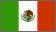
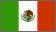
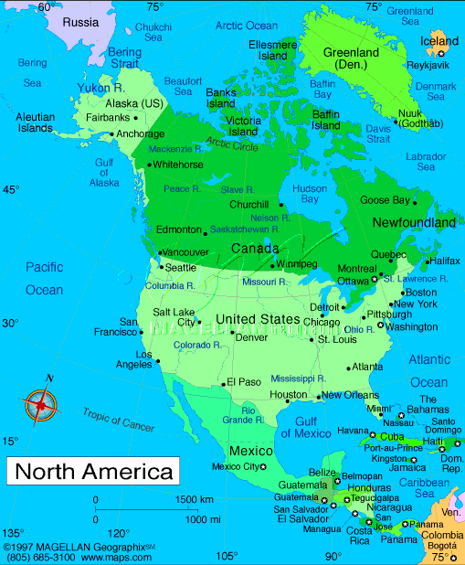

Indigenous signs for countries in North America
 David Bar-Tzur
David Bar-Tzur  

- North America
- NDH [5], PO away, FO diagonally up, DH [A], PO > signer, FO diagonally down, thumbs touch to show the area where North American touches South America. The handshapes are somewhat different, but to get the general idea of the arrangement of the hands, see the QuickTime movie at NEEDS Outreach: North/South America.

Flags: World flag database.
Map: Maps.com - "search" for country, then "Digital Map Graphics").
For a quick, interesting resource for facts about this and other countries,
try Mystic Planet - The New Age directory of Planet Earth.
Explanation of glossing system used
(to understand how I describe the signs in this dictionary)
- Canada (Canada)
- (1) [A] grabs hold of garment at chest and pulls outward 2x.1 For a QuickTime movie of this sign, see ASL browser - Canada. (< Royal Canadian Mounted Police "get" their man.)
(2) [A] grabs hold of garment at chest and moves up and down chest several times.2 (< Royal Canadian Mounted Police "get" their man.) (3) [C], PO away, moves in arc > DS.2
- Mexico (México)
- (1) Salute with [M].1
(2) [V], PO > NDS, touches index finger to temple, then twists at wrist so that FO is away and pointing down slightly. For a QuickTime movie of this sign, see NEEDS Outreach: Mexico.
- United States (America)
- (2h)[5] interlaced, FOs away from signer, circles horizontally.1 For a QuickTime movie of this sign, see ASL browser - America. (< the interlaced wooden pole fences or the 13 Original States working together.)
List of sources cited
 1. Signs around the world: Countries [Videotape]. Burtonsville, MD: Sign Media.
1. Signs around the world: Countries [Videotape]. Burtonsville, MD: Sign Media.
2. Signs everywhere by Kelly-Jones, N. and Hamilton, H. (Los Alamitos, CA: Modern Signs Press, Inc., 1981)

Home